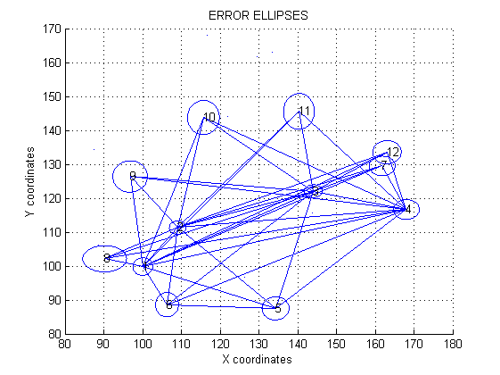

% CODE DONE BY CHERONO ANITAH % REG NO: F19/1705/2013
file reader to read observations from excel sheet
data=xlsread('Data.xlsx');
rdQ=data(:,1);
rdF=data(:,2);
for loop that reads values of X that are greater than zero
for x = 1:length(rdQ); if (rdQ(x)>0); P(x)=rdQ(x); end end X=P';
for loop that reads values of Y that are greater than zero
for y= 1:length(rdF) if (rdF(y)>0) U(y)= rdF(y); end end Y=U';
loading other observations into the program
DR=data(:,3);
DIST=data(:,4);
Sp=data(:,5);
Tp=data(:,6);
STW=data(:,7);
Spd=data(:,8);
Tpd=data(:,9);
% error of 0.008 is introduced to observaion 1
Dist=[(DIST(1,1)+0.008);data(2:6,4)];
conversion of grades to radians
DRrad = degtorad(DR * (360/400));
for loop to perform 50 iterations
for i=1:50;
% A matrix for distances for i = 1:6; s = Sp(i); t = Tp(i); dx = X(t)-X(s); dy = Y(t)-Y(s); Sc=sqrt(power(dx,2) +power(dy,2)); j = 2*s-1 ; A1(i,j) = -dx/Sc; A1(i,j+1)= -dy/Sc; j = 2*t-1; A1(i,j) = dx/Sc; A1(i,j+1) = dy/Sc ; ds(i) = DIST(i) - Sc; end dst = ds';
A matrix for directions
for i = 1:49;
k = Spd(i);
h = Tpd(i);
deltax = X(h)-X(k);
deltay = Y(h)-Y(k);
ss = sqrt(deltax^2+deltay^2);
j2 = 2*k-1;
A2(i,j2) = deltay/(ss^2);
A2(i,j2+1)= -deltax/(ss^2);
j2=2*h-1;
A2(i,j2) = -deltay/(ss^2);
A2(i,j2+1)= deltax/(ss^2);
an if else statement to align the 'deltas'to respective quadrants
j2=1;
if ((deltax>0) &&(deltay>0));
theta(i) = atan (abs(deltay/deltax));
elseif ((deltax<0) && (deltay>0));
theta(i) = pi -(atan (abs(deltay/deltax)));
elseif ((deltax<0) && (deltay<0));
theta(i) = atan (abs(deltay/deltax)) + pi;
else ((deltax>0) && (deltay<0));
theta(i) = (2*pi)-atan (abs(deltay/deltax));
end
%for loop for the swing to be applied to the observation directions for i=1:11;j=1; C(i,j) = atan((Y(2,1)-Y(1,1))/(X(2,1)-X(1,1))); i=12:22;j=1; C(i,j) = atan((Y(1,1)-Y(2,1))/(X(1,1)-X(2,1))) + pi; i = 23:33;j=1; C(i,j) = atan((Y(3,1)-Y(1,1))/(X(3,1)-X(1,1))) + pi; i= 34:44; C(i,j) = atan((Y(4,1)-Y(1,1))/(X(4,1)-X(1,1))) + pi; i = 45:49 ; C(i,j) = atan((Y(5,1)-Y(1,1))/(X(5,1)-X(1,1))) ; L=DRrad+C; end
end
L matrix to orient the observations
for ii=1:length(L) ; if (L(ii)>0 & L(ii)<=pi); Or(ii) = L(ii); % disp(L(ii)) elseif (L(ii)<=1.5*pi & L(ii)>pi ); Or(ii) = L(ii); % disp(L(ii)) elseif (L(ii)<=2*pi & L(ii)>1.5*pi); Or(ii) = L(ii); % disp(L(ii)) elseif (L(ii)>2*pi) Or(ii) = L(ii)-2*pi; % disp(L(ii)-2*pi) else (L(ii)<=0); Or(ii) = L(ii) + 2*pi; % disp(L(ii) + 2*pi) end end Theta1=theta'; Dir_observed = Or'; dL = Dir_observed - Theta1; dlf=[dst;dL];
The nuisance parameters for drections
for i =1:11; j=1; WN(i,j) =1; i= 12:22; j=2; WN(i,j) =1; i = 23:33; j=3; WN(i,j) =1; i= 34:44; j=4; WN(i,j) =1; i = 45:49; j=5; WN(i,j) =1; end
%At is a matrix of non-coordinates(nuisance parameters) % Ax matrix of type coordinates At=[zeros(6,5);WN]; Ax=[A1 zeros(6,16);A2];
weight matrices of the observations(directions & distances respectively)
for i=1;j=1:49; W1(i,j)=(4.25451703*10^10); end W2=[zeros(49,6) diag(W1)]; for i= 1;j=1:6; W3(i,j)=11111111.11; end W4 =[diag(W3) zeros(6,49)];
combined weight matrix
W5=[W4;W2];
combined A matrix type coordinates and non coordinates
AF=[Ax At];
% computing Normal equation matrix
N = AF'*W5*AF;
individual elements to make up the Normal euation matrix
Axx=Ax'*W5*Ax;
Att=At'*W5*At;
Atx=At'*W5*Ax;
Axt=Ax'*W5*At;
%combined normal equatin matrix
NAxt=[Axx Axt;Atx Att];
reduced normal equation matrix
N_x=Axx-((Axt*inv(Att))*Atx) ; % absolute vector of type coordinates nx=Ax'*W5*dlf; % absolute vector of type non coordinates nt=At'*W5*dlf; % reduced absolte vector n_x = nx-(Axt*(inv(Att))*nt);
for loop to form the G-matrix for free network adjustment
for i=1;j=1:2:24; G(i,j)=1; i=2;j=2:2:24; G(i,j)=1; i=3;j=1:2:24; G(i,j)= Y; j=2:2:24; G(i,j)= -X; end
forming the constraint matrix R
R=[N_x G';G zeros(3,3)]; % final reduced absolute vector with correct dimensions n_xx=[n_x ;zeros(3,1)]; % computing the corrections dxf=inv(R)*n_xx;
seperating individual corrections in X and Y
for j=1; i=1:2:24; dx1=dxf(i); i=2:2:24; dy1=dxf(i); end
X and Y coordinates of points after adjustment
X=X+dx1; Y=Y+dy1;
end%% %computing the residual vectors v dX1=[dxf;zeros(2,1)]; A_x=AF*dX1; v=dlf-A_x; % end of the iteration loop % inverse of the constraint matrix R IR=inv(R); Qxx=IR(1:24,1:24); % aposteriori variance sigma sigma=(v'*W5*v)/(55-24); % perform Global Model Test GMM GMM=(v'*W5*v); % Compute the covriance matrix Exx=sigma*Qxx; % Extracting covariance matrices associated with the 12 points E1 = diag(Exx); E2 = diag(Exx,1);
a for loop extracting the variances from the above matrix
for j=1; i=1:2:24; sigx2=(E1(i)); i1=1:2:23; Covarx = (E2(i1)); i1=1:2:23; i=2:2:24; Covary = (E2(i1)); sigy2= (E1(i)); end
obtaining elements of the error ellipses
sigx=sqrt(sigx2); sigy=sqrt(sigy2); a=sqrt((0.5*(sigx2+sigy2))+sqrt(0.25*(sigx2-sigy2)).^2+Covarx.^2); b=sqrt((0.5*(sigx2+sigy2))-sqrt(0.25*(sigx2-sigy2)).^2+Covarx.^2);
computation of the direction of semi-major axes
for i = 1:12; j=1; tanthita(i) = (2*Covarx(i))/(sigx2(i)-sigy2(i)); end thita = (atan(tanthita)/2)';
%plotting error ellipses for i = 1:12; x=X(i); y=Y(i); grid on; hold on; plot(x,y); end xlabel('X coordinates'); ylabel('Y coordinates'); title('ERROR ELLIPSES'); for i = 1:49; p = X(Spd(i)); g = X(Tpd(i)); q = Y(Spd(i)); r = Y(Tpd(i)); x0 = [p g]; y0 = [q r]; plot(y0,x0); end % controlling the size of the ellipses for i = 1:12; p = 1:1:12; t = -2*pi:pi/100:2*pi; x = X(i)+((a(i)*sin(t))*25000); y = Y(i)+((b(i)*cos(t))*25000); plot(y,x); text(Y(i),X(i),num2str(i)); end
computing the test statistics T
T=v'*W5*v if (T<47.6 & T >16.1680) disp('Accept the null hypothesis') else disp('Reject the null hypothesis') end %Computing the standard deviation of the residuals vmean= (sum(v))/55; vsq= power(v-vmean,2); Sd = sqrt((sum(vsq))/55); % Outlier detection by method of outliers for jj= 1:length(v); if (v(jj) <= 3*Sd) p(jj) = 1; elseif (v(jj) > 3*Sd) p(jj) = exp(-v(jj)); end end
T = 42.8580 Accept the null hypothesis